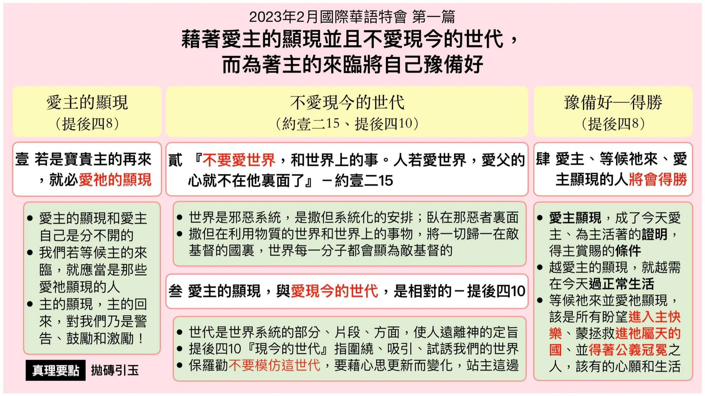

第一篇 借着爱主的显现并且不爱现今的世代，而为着主的来临将自己预备好
前言
这次总题说到为着主的来临，我们需要 将自己豫备好。这系列的五篇信息向我 们指明，我们应当在五方面将自己豫备 好，作主所要回来迎娶的新妇。本篇给我 们豫备的第一方面─一个极重要的基础─ 爱主和爱主的显现。这是根据提后四章 八节与十节，保罗给我们一个操练和一 个对比。我们应当效法使徒保罗，作一个 操练爱主的显现的人。同时，我们也应当 受一个对比的警告，绝不可像底马一样， 爱了与爱主显现相对之现今的世代，结 果 ，就离弃了使徒保罗和他的职事。
真理要点(鸟瞰)
壹 当宝贵主的再来 ：①爱主显现就爱主②作爱主显现的人 ③主的显现是鼓励
贰 世界和其上的事 ：①是一邪恶的系统②卧在那恶者里面 ③归一于敌基督国
叁 认清现今的世代 ：①世界系统的部分②吸引我们的世界 ③使底马离弃保罗④使徒保罗的劝勉 ⑤我们该有的拣选
肆 爱主显现的结局 ：①将来得着主赏赐②需要过正常生活 ③该有心愿与生活
经历应用(操练)
我们活在这世上，常常沾染世俗的污秽，不知不 觉就世俗化了。保罗在罗马十二章二节劝我们： 『不要模倣这世代。』这世代是指世界现今、实际 的部分，就是我们所接触并活在其中的。每一世 代各有其特殊的形态、特征、时尚、流行与潮流， 像一个模子一样，要把人模成它的样子。为此，我 们的穿戴衣着，我们所用的一切，越简单越好，只 要彀应付我们的需要就可以了。然而，只有生命 之灵的律在我们里面律我们时，我们全人纔会爱 主，纔会简单。所以，我们应当与主有交通，活在 生命之灵的律里，使我们的生活简单，得以脱离 世俗的牵绊。
负担
在一九二五年最后一天，倪弟兄去找和受恩教 士一同祷告，她祷告说，『主阿，难道你真要让 一九二五年过去么？难道你真要等到一九二六 年纔再来么？然而，在这末了的一天，我还求你 今天就来！』不久倪弟兄在路上遇见她，她又向 他说，『真希奇，为何到今天，祂还没有来！』 不要想我们既清楚主来临的兆头，就可以松懒。 先爱世界，到了末七再追求主。没有这么便当的 事。要相信主是可畏的。我们能有每一个今天， 实在都是主的恩典。所以只要还有今天，只要气 息尚存，我们就当爱主，爱慕祂的显现，热切等 待主来，(腓三 20 ，)并且常以此事为勉。
